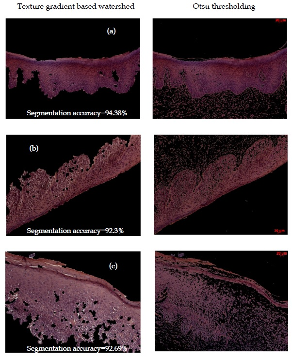
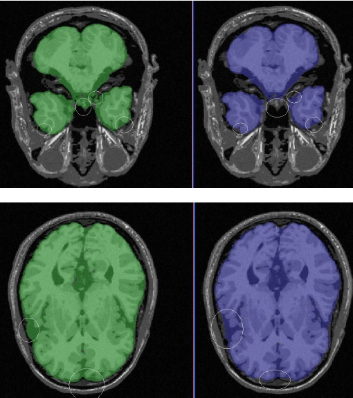
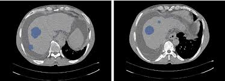

I am a Masters student in Computational Science and Engineering in the School of Computing at Georgia Tech.
My areas of interests are Computer Vision and Machine Learning. I am currently a graduate researcher at Centre for Spatial Planning Analytics and Visualization at Georgia Tech, wherein I am working on modeling traffic flow and pavement vulnerability using agent based simulation.
I am particularly interested in Visual Scene Interpretation of outdoor scenarios including scene classification, object detection and semantic segmentation. I am interested in the applications of urban scene understanding for automotive applications and virtual 3D augmented reality.
Topic: Smart Funding Strategies for Maintaining Interdependent Transportation Infrastructure Assets
Mentor: Dr. Zhaohua Wang
I am primarily involved in formulating the infrastructure (pavement/bridges) maintenance optimization problem, modeling the interdependency using network flow models and implementing a parallel computing framework for large scale optimization
Developed machine learning models and provided analytics consulting to Mastercard’s merchant partners on customer persona identification and spending behaviour using 100TB card transaction data. Extensively worked on Hive, R, Python and Spark
Category sales & customer purchase behaviour analysis and campaign performance modeling for a leading South African grocery retailer
Led a team of three analysts to develop machine learning models for providing behavioural insights and optimize campaign targeting for Future Group's customer base enrolled in Payback loyalty program. Payback is a multi-brand loyalty program and Future Group is India's leading multi-format retailer with popular supermarket chains like Big Bazaar, Central, FBB, BrandFactory
Pricing analytics and supply chain consulting to Fortune 500 US insurer managing the pre-owned mobile device trade-in
program for T-Mobile - Led a team of 10 consultants and handled recruitment of new team members
Mobile Buyback Pricing
Responsibilities included financial analysis, budget planning, client seating optimization, marketing collateral development and operations performance tracking for Insurance outsourcing operations ($250M revenue). High Performer - Rated ‘Exceeds all expectations’ (5/5)
Full-Stack developer responsible for maintenance & enhancement of Travelocity’s checkout web application by resolving high impact booking issues, developing unit tests and coordinating testing with QA team
Journal Publications
Oral/Poster Presentations
Topic: Early detection of Oral Cancer through multi-modal texture analysis of oral submucous fibrosis images

Tools/Libraries used: MATLABTopic: Texture based segmentation of cerebellar region in MRI images using SVM & deformable registration

Tools/Libraries used: MATLAB, C, Python, ITKTopic: An entropy based multi-thresholding method for semi-automatic segmentation of liver tumors
The work was done as part of European Commission backed Accurobas (Accurate Robot Assistant) project and involved developing an automated liver tumor extraction algorithm on Computed Tomography images for guiding minimally invasive robotic surgery. The algorithm was incorporated into MiroSurge platform. I was involved in the following aspects:

Tools/Libraries used: MATLAB, MIPAVThe project involved developing a pan-tilt unit controller & setting up a Serial Communication interface between a remote robot & the base station for region mapping. I created GUI’s in Visual C++ for the Sensor Data Acquisition model & incorporated a module to calculate robotic arm’s orientation using color-based segmentation
Tools/Libraries used: Visual C++, Visual Studio
*Report unavailable due to confidentiality clause
Tools/Libraries used: Python, OpenCV, VLFeat